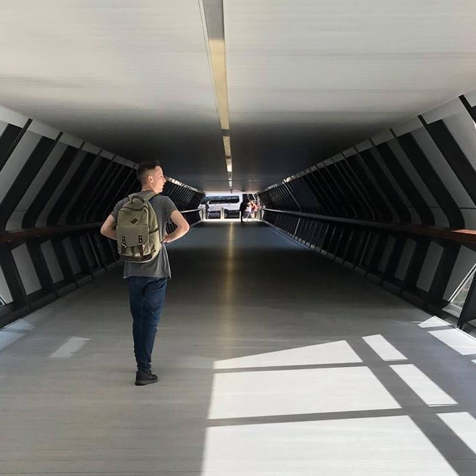
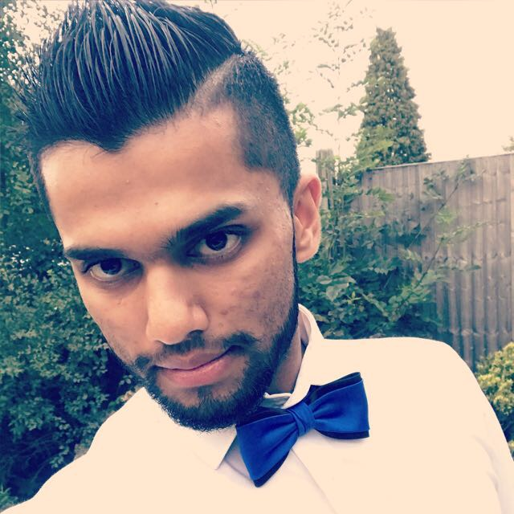

Want to know about the team behind Higher Thoughts?
Take a scroll down and look at each team member involved in the project Higher Thoughts. The group started this project with the idea to address the social issues that can impact us today as well as make sure audiences can gain a new understanding of issues relevant in today’s society. By doing so you might also want to know the team behind the debates:
Callum Day
Me and the team are all Digital Media students at Coventry University and we are using this opportunity to spread awareness for everyone and get the best project yet for social issues today. The social issues that are addressed are relevant to everyone and we want to make sure everyone can get a new understanding of certain social issues as well as engage with us and enjoy the show!
Justin Beder
My whole life I’ve been thoroughly invested in the social justice of others. With a keen eye on creative media, it’s always been my dream to create a collaborative piece of media that incorporates debating in depth about social justice issues and eastern philosophy. Having been raised in London by two South African parents, I’ve been made aware of the differences in culture in a country such as ours and have been desensitised to the inequality that many members of society face. This has spurred my interest and motivated me to speak out about what can so easily be swept under the rug. Wake up England!
Muhammed Safi

Gandhi said that “whatever you do in life will be insignificant, but it's very important that you do it because nobody else will”. I think to a certain extent Ghandi was right. Were all doing things because we need to survive, pass time, and go through the motions in life. How many of us, want to make an impact on someone else life, hence our show, wants to aware you, help you make a difference to somebody else life.
Ellie Kirkbride
I'm Ellie, I'm a 19 year old Digital Media student studying at Coventry University in my second year. I am so pleased that we are addressing the social issues that are tackled in everyday life, the idea of having a debate show about it meant that we were able to review different views and opinions.
Luxsaan Sivakumar
Content will go here
Jimmy Sodiya
My name is Jimmy. I am currently in my second year at Coventry University, Studying Digital Media. Having grown up in London I have witnessed and experienced a number of social issues that we will be looking in to and I believe I can provide a unique input on some topics.